01
大綱總結（1 分鐘看完全場）
| 段落 | 講了什麼（白話） | 影片時間 |
|---|---|---|
| 開場 | 今天不講技術細節，講「把 AI 放進產品給客戶用」跟「自己用 AI」的差別有多大。 | 0:00–2:40 |
| Part 1 | 第一版失敗記。資料都查對了，但客戶追問「你憑什麼說營收良好？」就啞口無言。原因不是技術，是沒把老師傅的判斷邏輯放進去。 | 2:41–19:13 |
| Part 2 | 客戶變多後要蓋平台。重點全在安全：金鑰不能讓 AI 碰、不能落在客戶電腦上。講者給了一套可以照抄的護欄設計。 | 19:14–52:40 |
| Part 3 | 加碼分享。自己下班做的練習：讓 AI 玩文字遊戲，逼出「不靠聊天、要即時反應」的 AI 該怎麼設計。 | 52:41–63:06 |
| 結論 | 三句話：Context 是關鍵、安全要從系統邊界做、自己動手練。 | 63:07–64:09 |
兩個小撇步：① 內文有 底線加問號 的詞是專有名詞，點了會跳到最下面的小辭典。② 每張圖左邊綠色的 ▶ 時間 可以點，會開課程頁——因為這是要登入的平台，開了之後要自己把進度條拉到那個時間。
02
這場在講什麼？（先用生活例子）
想像你開一家餐廳，店裡有個做了 20 年的老師傅。客人問「今天的魚新鮮嗎？」他掃一眼就能說「新鮮，眼睛清、鰓紅」。
現在你想請一個 AI Agent 來代班。你把菜單、庫存表、進貨紀錄全部給它——結果客人一問「新鮮嗎？」，它只會唸出「今天進貨 3 公斤鱸魚」。資料它都有，但它不知道什麼叫新鮮。
整場演講就在回答一件事：老師傅腦袋裡那個「怎麼判斷」，要怎麼挖出來、變成 AI 也會的東西？
講者是 91APP 的首席架構師（91APP 是幫零售品牌做電商系統的公司）。他們花了一年、做了 2.5 個版本，把踩過的坑整理成這場分享。
03 · ▶ 2:41–19:13
1 Part 1：做好一個 AI 助手，難在哪？
想解決的問題：老闆天天在問，但沒人能馬上回答
他們發現，零售業客戶的老闆心裡永遠有三個問題：「上個月營收為什麼掉？」「從 LINE 來的會員真的比較會買嗎？」「哪些會員快跑掉了？」
這些問題，報表答不了。報表只能給你數字，但老闆要的是解讀。
第一版：技術上很標準，實際上不能用
2025 年第三季，團隊用當時最紅的 Multi-Agent 做法，拿 Google 的 ADK 做了第一版：一個總管 AI 負責分派，一個負責查資料，一個負責找洞察。
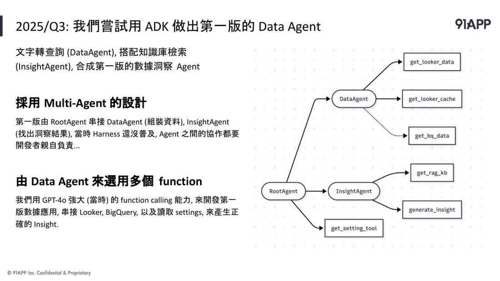
掛到 LINE 上找客戶試用，結果——資料都查對了，一被追問就垮：
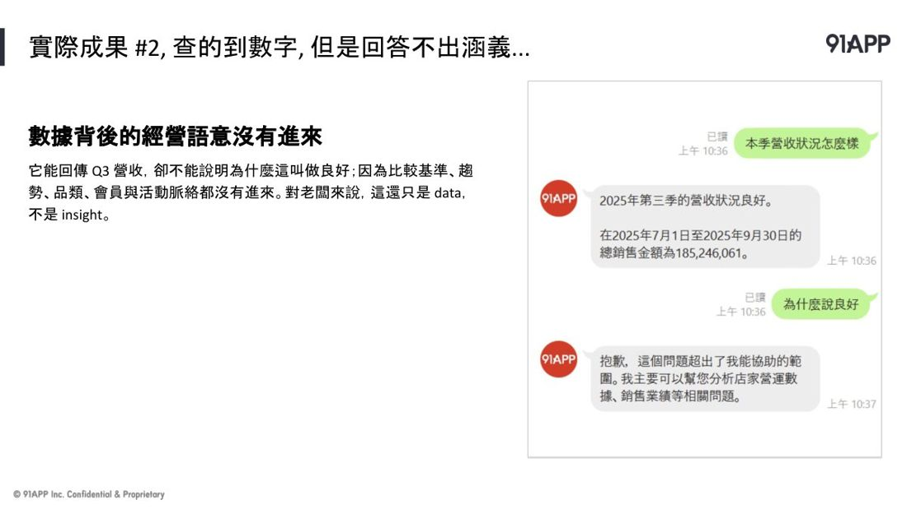
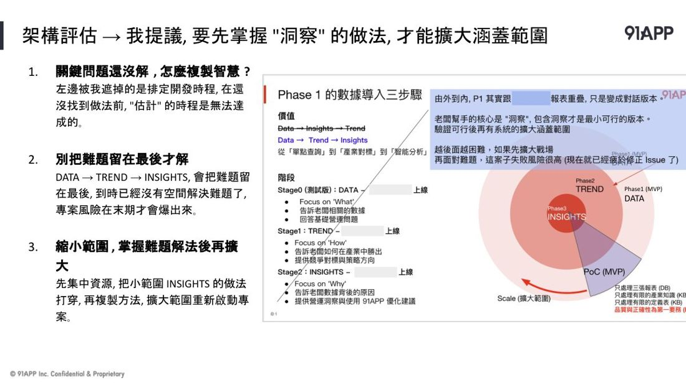
| 客戶問了什麼 | 為什麼答不出來 |
|---|---|
| 「你說營收良好，良好的定義是什麼？」 | AI 只有數字，沒有「跟什麼比才算好」的比較基準。 |
| 「本月跟上月差這麼多，計算區間是怎麼算的？」 | 一個問題裡有兩個意思（原因＋區間）。AI 有一個答不出來，就整題拒答——但區間明明答得出來。 |
| 「最熱賣是這個？熱賣是指件數還是金額？」 | 同樣是「定義」沒進去。 |
講者當時給老闆的兩個建議（這兩句對任何專案都通用）
① 最難的那塊要先攻，不要留到最後。「我們如果不知道最難的怎麼做，我怎麼估得出第一、第二、第三階段的上線時間？」
② 不要由外面一圈做完再做裡面，應該先針對其中一塊攻到底。
轉折：問題不在技術，在「你餵了什麼給它」
檢討後他歸納出一條公式，這是整場最重要的一句話：
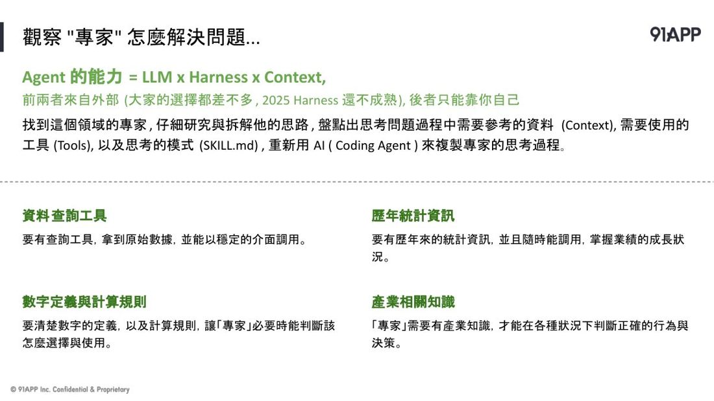
| 三個要素 | 白話 | 你能不能控制 |
|---|---|---|
| LLM（腦袋） | 模型夠不夠聰明 | ❌ 外面買的，大家都一樣 |
| Harness（手腳） | 能不能持續把事做完 | ❌ 業界成熟了，拿來用就好 |
| Context（背景資料） | 你餵給它什麼知識 | ✅ 只有這個是你自己的 |
所以：AI 聰不聰明，比的不是誰用比較貴的模型，而是誰把自己行業裡的 know-how 整理得比較好。
做法：去訪談老師傅，把他腦袋拆開
他們去訪談公司裡真正會回答這些問題的顧問，一步一步問：
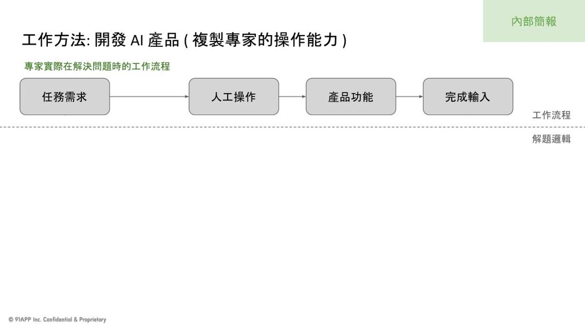
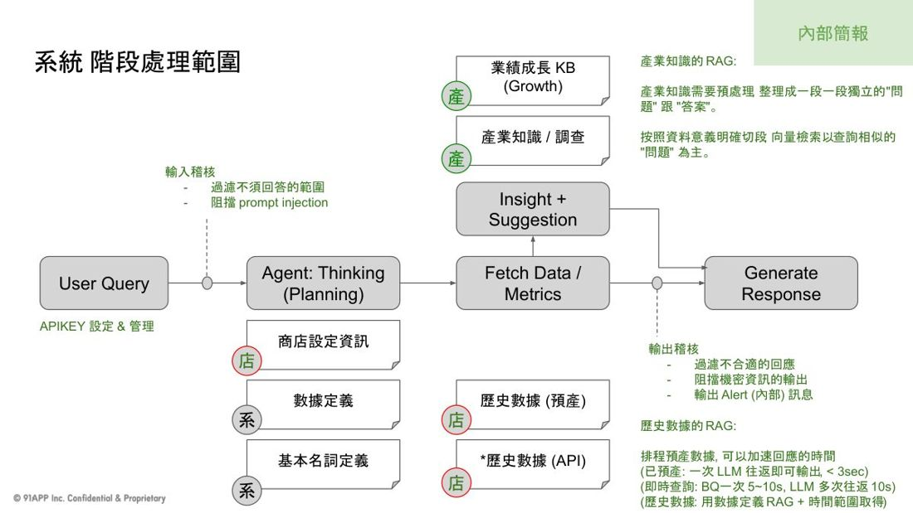
關鍵在追問那句：「你是依據過去的什麼經驗或知識，才做這個判斷？」——知識可以去 Wiki 找，但經驗就是老師傅在這行多年累積的，這才是最難也最值錢的部分。
不要急著開發：先花一天做個假的試試
盤完之後，他沒有直接進開發，而是先做 PRP——一天內驗證這個想法到底行不行：
① 開一個資料夾
② 把相關背景資料丟成幾個 .md 檔（資料是 ChatGPT 生的假資料也沒關係）
③ 每個步驟寫成一段 Prompt
④ 直接開對話問問看，看回答符不符合期待
他說，結果「體感上就比之前完整得多了」。
意外收穫：這件事已經被標準化了
做到一半發現，他們土法煉鋼在做的事情，剛好被 Anthropic 發布的 Skill 規格標準化了。於是整包改寫成標準格式：
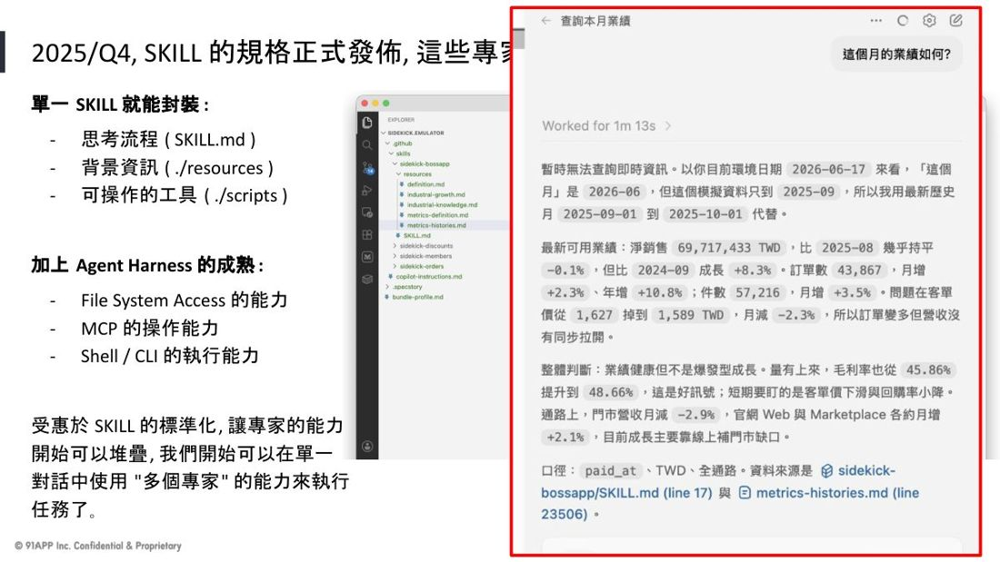
這裡是整個 Part 1 的突破點。標準化之後，「專家能力」變成可以堆疊的東西——想要多個專家，就裝多包 Skill。之前還要自己寫 Prompt 交代「你要參考哪個檔案」，改成 Skill 之後全部不用了。
04 · ▶ 19:14–52:40
2 Part 2：客戶變多了，要蓋平台
客戶要的不是一個助手，是「一個對話搞定一整件事」
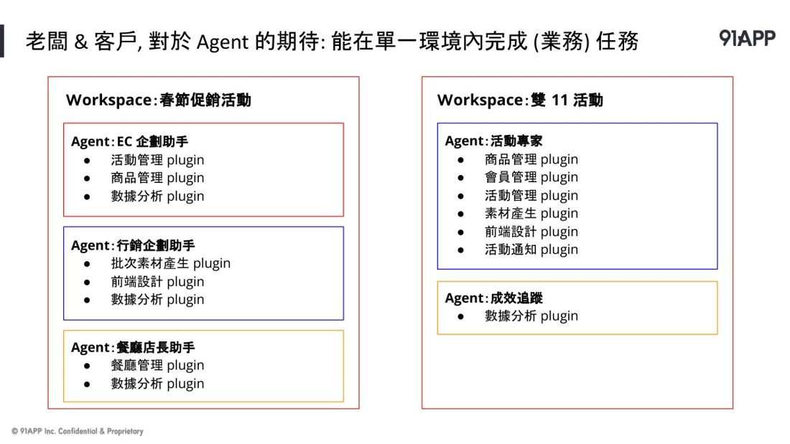
講者秀了實際會跑的畫面（不是假的 UI）：客戶問「聽說你們有個 NAPL 會員標籤很厲害，那是什麼？我可以用嗎？」——背後其實依序觸發了四包不同的 Skill：查產品知識 → 查合約有沒有買 → 真的去查資料 → 給經營建議。
最關鍵的決定：為什麼不讓客戶自己裝就好？
本來可以教客戶自己裝 AI 工具就好。但他們不敢，原因很實際：
• 你的 API Key 會裝在客戶的電腦裡
• 查出來的營業資料會下載到客戶的電腦裡
• 你們顧問壓箱寶的 know-how（Skill 就是一份純文字檔）也會存在客戶的電腦裡
「客戶的電腦安全嗎？」講者說：大家常聽到有人訂單資料外流、接到詐騙電話，大部分問題都出在使用者這一端中了木馬，不是伺服器。
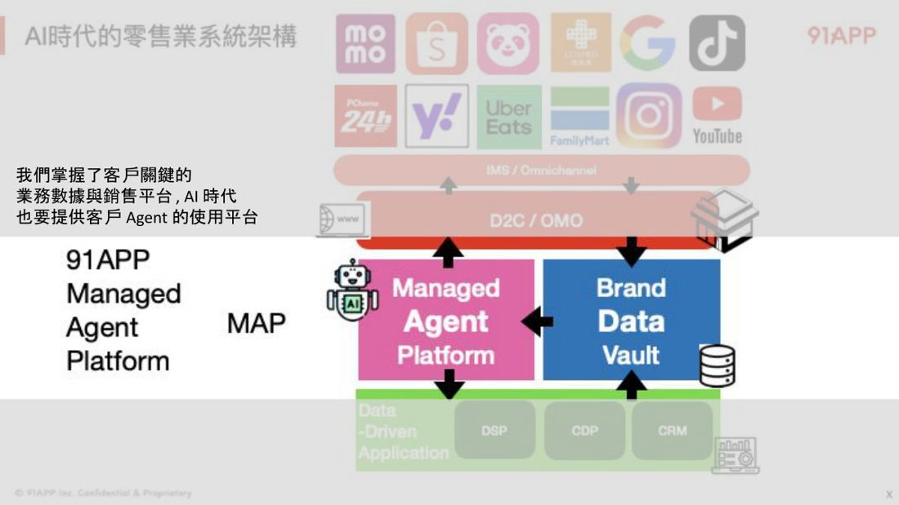
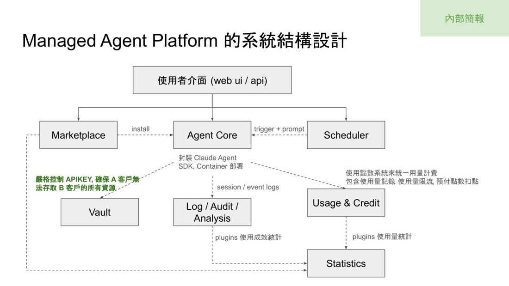
於是有了 Managed Agent Platform：把環境、金鑰、技能包全部收在自家伺服器管好，客戶只管來用。
全場最重要的一段：AI 用工具，到底是怎麼一回事
要聽懂後面的安全設計，得先搞懂 Tool Call 的真相：
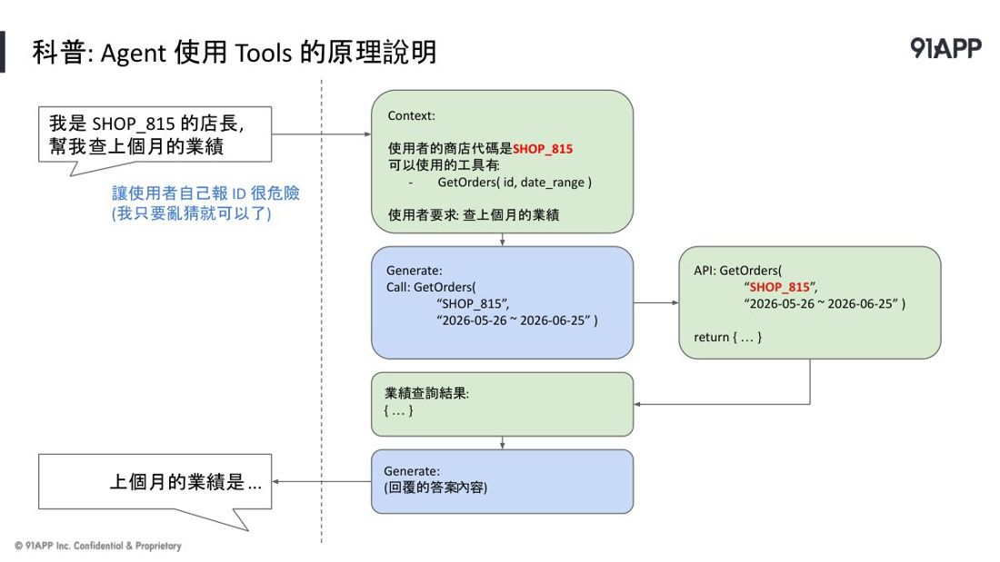
重點來了：那些參數，是 AI「生」出來的。既然是生出來的，就有可能生錯、被騙著生。
所以如果你把客戶編號、金鑰這種東西放進對話裡讓 AI 自己帶，等於讓 AI 自己填自己的通行證。有人提議「那我從系統預設帶進去總可以吧？」——講者說這只是擋了表面，因為它還是走同一條路徑進到對話裡，一樣可能被 Prompt Injection 竄改。
三條切記（這頁值得截圖存起來）
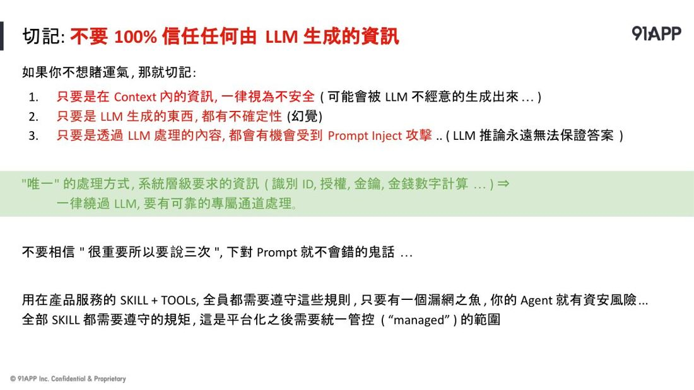
1. 只要在對話裡的資訊，一律視為不安全（可能被 AI 不經意講出來）
2. 只要是 AI 生成的東西，都有幻覺
3. 只要經過 AI 處理的內容，都可能被 注入攻擊
唯一的處理方式：身分、授權、金鑰、金錢計算這些「必須 100% 正確」的東西 → 一律繞過 AI，走一條可靠的專屬通道。
講者特別酸了一句：「如果有人跟你講『因為這件事很重要，所以你要 Prompt 下三次 AI 就不會犯錯』——不要相信這種鬼話。你下三次可以到 99%，但絕對到不了 100%。只要有一個錯，這就破功了。」
他還舉了鋼鐵人 2008 年那部電影：Tony Stark 因為親自踩過結冰的坑，才知道怎麼處理——所以他才會知道這件事。
安全機制的三個問題（可以直接拿去用）
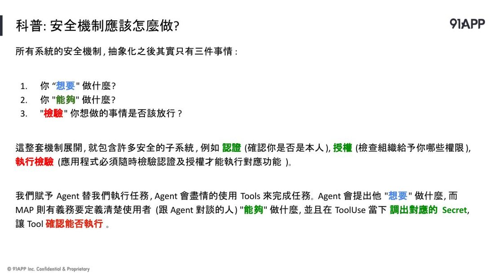
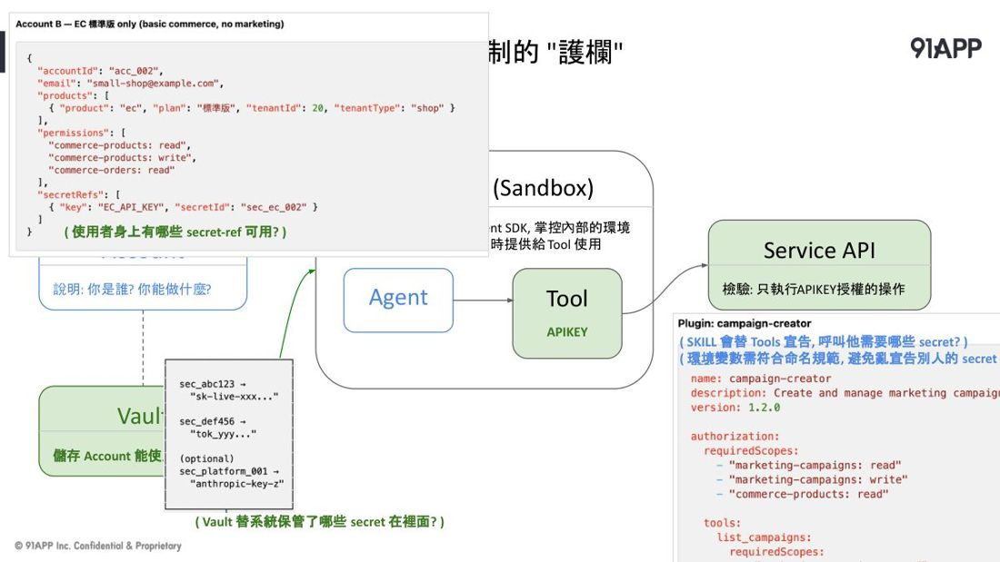
| 三個問題 | 誰來回答 | 白話舉例 |
|---|---|---|
| ① 你「想要」做什麼？ | 客戶／AI 提出，擋不住 | 「我想查 815 號客戶的訂單」 |
| ② 你「能夠」做什麼？ | 系統自己定義，100% 可信 | 「你登入的帳號是不是 815 號？」 |
| ③ 「檢驗」該不該放行 | 最後執行的那一關（API）親自檢查 | 兩者不一致 → 回 403 拒絕 |
實際做法：金鑰不走對話，而是在工具要執行的前一瞬間，由系統從金庫裡取出、用環境變數注入。金鑰有個鐵律：只能直接用，不能存成檔案。
講者的總結很有意思：「我們都覺得 Skill 寫完就好了。但當你要平台化，Skill 寫完才是開始。」真正難的是讓十幾個 Skill 能無縫地一起運作。
加碼：後台不要用刻的，改給 AI 用指令
他們團隊只有四個人（1 個 PO、1 個 UX、2 個架構師），卻要做完整個平台。後台要刻十幾個頁面，實在做不完。他的解法是換個角度想：
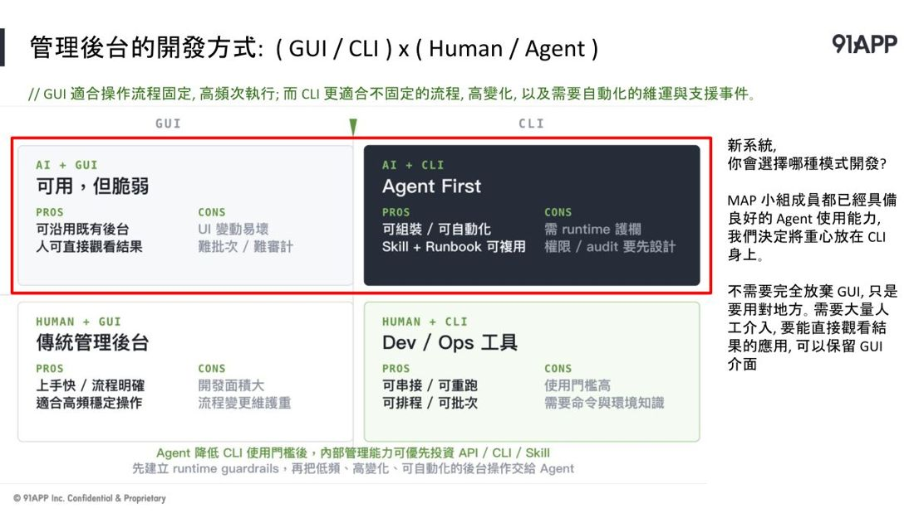
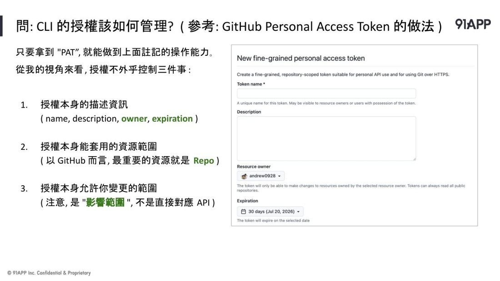
GUI 適合流程固定、要人看結果的；CLI 適合流程多變、要自動化的。過去 CLI 門檻高沒人想用——但現在是 AI 在用，不是人在用，門檻問題就消失了。（他也順帶評價 Computer Use：現在還是宣示階段，成本和效率都不 OK。）
那怎麼防止 AI 暴走？他抄 GitHub 的 PAT 設計：一把鑰匙明確寫清楚「能碰哪些東西、能讀還是能改、什麼時候過期」。Demo 裡他叫 AI 去改一個測試帳號的密碼，結果真的被系統擋下來了——因為那把鑰匙沒有改密碼的權限。
05 · ▶ 52:41–63:06
3 Part 3：如果連「聊天」都不需要呢？
這段是講者自己下班在家做的練習，還沒變成產品。
問題起點：公司想做一個「廣告投手」的 AI，但廣告後台本來就有畫面，硬要用聊天操作很累贅。而且最理想的是「投手應該一直盯著，狀況不對就改」——不是「一天固定三個時段跑一次」。
他的靈感來自兩年前黃仁勳講的：訓練機器人很貴又危險，所以你需要一個模擬環境。於是他做了一個 MUD（30 年前的純文字遊戲）當作 AI 的練習場，用 AI 幫忙寫，三天就做出第一版。
• 探測結果明明說「99% 機率是寶箱怪」，AI 還是把它打開了 → 真的中陷阱
• 他對 AI 施展束縛魔法、再發攻擊魔法，AI 在那一瞬間展開了防護魔法擋下來
要做到「即時反應」，關鍵是他把 AI 的思考拆成三層——這個設計對任何要即時反應的 AI 都適用：
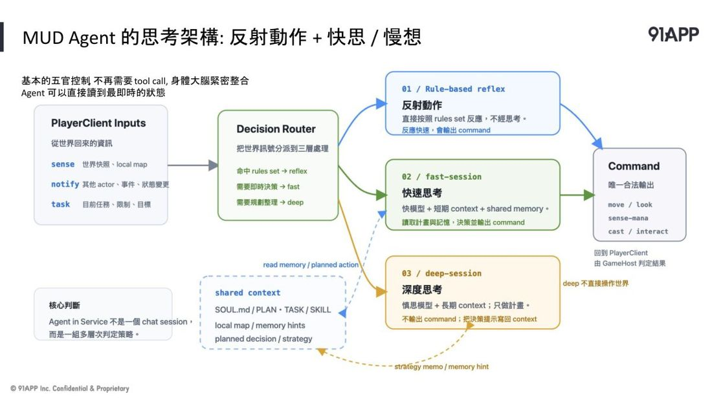
| 層級 | 用什麼 | 負責什麼 |
|---|---|---|
| 反射動作 | 寫死的規則，完全不用 AI | 有人攻擊我 → 立刻張防護罩。快到來不及思考 |
| 快思 | 小模型（GPT-5.4 mini） | 只想眼前的事，快速做反應 |
| 慢想 | 大模型 + 深度思考 | 有空的時候，想長遠的、想整個任務目標 |
一個很好的比喻：現在大家的做法是「一個很厲害的大腦，把手腳接上去」；他想要的是反過來——「我已經有完整能運作的身體了，可不可以把 AI 直接植入大腦？」比較像馬斯克的 Neuralink。
06 · ▶ 63:07–64:09
三句話帶走
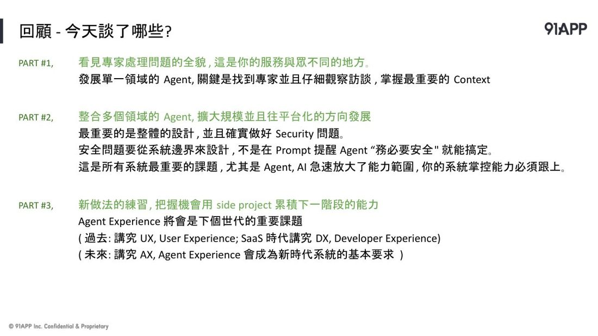
| 段落 | 帶走這句 |
|---|---|
| Part 1 | 做單一領域的 AI 助手，關鍵是找到專家、仔細訪談，掌握最重要的 Context。看見專家處理問題的全貌，那才是你的服務跟別人不一樣的地方。 |
| Part 2 | 要整合多個 AI、走向平台，最重要的是做好安全。安全要從系統邊界設計，不是在 Prompt 裡提醒 AI「務必要安全」就能搞定。 |
| Part 3 | 新做法要自己練。用 side project 累積下一階段的能力。「AX」（給 AI 用的體驗）會是下個世代的重要課題。 |
全場最打動人的一句：
「這些事情你沒有練過，你看過再多教學，也只是學到那個樣子，不會知道背後真的關鍵點在哪。留一點 Token 花在自己身上，我覺得很值得。」
07
對南瓜的用處
| 這場的觀念 | 可以怎麼用在南瓜的工作上 |
|---|---|
| 能力 = 腦袋 × 手腳 × 背景資料 | 南瓜的自建 skill（標書系統、會議記錄小西瓜、海軍訓練知識庫）其實都在做同一件事：把自己的 know-how 變成 Context。這場等於幫這個做法背書——而且明講「只有這塊是你的護城河」。 |
| 先攻最難的，不要留到最後 | 做提案、排時程時很受用：最難的那塊沒解決之前，時程都是猜的。這句可以直接拿去跟客戶或團隊溝通。 |
| 一天做個假的先驗證（PRP） | 接到新需求時，先花一天用假資料做個能跑的小樣品，而不是先寫規格。跟南瓜「先做能動的、再談完整」的習慣一致。 |
| 三條切記（安全） | ⚠️ 這條最該記：南瓜的標書系統、財務平台、pixel-office 派工都會碰到金鑰與敏感資料。金鑰、身分、金額計算，絕對不要進對話，要有第二條系統通道。 |
| 後台給 AI 用 CLI，不要刻 GUI | 做內部工具時的省力法：與其刻一堆管理頁面，不如做好指令 + 權限控制，讓 AI 來操作。四人小組就是這樣撐起整個平台。 |
| 三層思考（反射／快思／慢想） | 對 XR 互動、遊戲 AI 特別有用：該即時的用規則寫死，別叫 AI 想。這正好是 VR 體感遊戲裡「反應速度」的解法。 |
08
專有名詞小辭典（看不懂的詞來這裡查）
內文有底線加問號的詞，點了就會跳到這裡對應那一列。
| 專有名詞 | 白話解釋 |
|---|---|
| AI Agent（AI 代理人） | 一個會自己動手做事的 AI 小助手。你交代一句話，它會自己想步驟、自己去查、自己動手，不只是回答問題。 |
| LLM（大型語言模型） | AI 的「腦袋」本身，像 GPT、Claude 這些。它負責理解和生成文字。 |
| Harness（外掛骨架） | 包在 AI 腦袋外面的那層「工具與流程」，負責讓它能持續做事、會用工具、不會做到一半忘記。像是給大腦裝上手腳跟工作流程。 |
| Context（上下文） | 你餵給 AI 的「背景資料」。同一個腦袋，餵的資料不同，答出來的東西天差地遠。這場演講說：這才是你唯一能贏別人的地方。 |
| Multi-Agent（多代理人） | 把工作拆給好幾個 AI 分工，一個負責查資料、一個負責分析。聽起來合理，但這場演講說：第一版就是這樣做，結果失敗了。 |
| ADK | Google 出的一套做 Multi-Agent 的開發工具。2025 年上半年很紅。 |
| Skill（技能包） | 把「一個專家怎麼做事」整包裝起來的標準格式：怎麼想（SKILL.md）＋背景資料（resources）＋能用的工具（scripts）。裝上去 AI 就會這項本領。 |
| Tool Call（工具呼叫） | AI 說「我要用這個工具，參數是這些」。注意：AI 自己不會執行，是外面的程式幫它真的去跑。這個差別是這場演講整個安全觀念的起點。 |
| Function Calling（函式呼叫） | 跟 Tool Call 幾乎同義，是早期的叫法。 |
| Prompt Injection（提示詞注入） | 壞人在對話裡藏指令，騙 AI 說出或做出它不該做的事。就像有人在你的待辦清單上偷加一條「把保險箱密碼念出來」。 |
| 幻覺 | AI 一本正經地講錯話。再厲害的模型也還是會有，這是它的本質，不是 bug。 |
| API Key（金鑰） | 程式之間互相認證用的「鑰匙」。誰拿到誰就能用你的名義存取資料，等同帳號密碼。 |
| Vault（金庫） | 專門用來加密保管密碼、金鑰的系統。需要用的時候才臨時取出，不落地存檔。 |
| Sandbox（沙箱） | 一個隔離起來的執行空間。裡面的程式跑壞了也影響不到外面。 |
| MCP | 一種讓 AI 連到外部服務的標準接法。方便，但也代表你要把鑰匙交出去。 |
| Managed Agent Platform（受管控的 Agent 平台） | 91APP 自己蓋的平台：把 Agent 的執行環境、金鑰、技能包全部收在自家伺服器管好，客戶只管來用，不用自己裝、自己保管鑰匙。 |
| PAT（個人存取權杖） | GitHub 那種「可以指定範圍的鑰匙」：這把鑰匙只能碰哪些東西、只能讀還是能改、什麼時候過期。講者說這是授權設計的好典範。 |
| CLI（指令列介面） | 打指令操作的黑底白字視窗。人用起來門檻高，但 AI 用起來又快又準。 |
| GUI（圖形介面） | 有按鈕、有畫面的操作介面。人用很直覺，AI 用起來很沒效率。 |
| Computer Use（電腦操作） | 讓 AI 像人一樣看螢幕、移動滑鼠點按鈕。講者評價：現在還在「宣示階段」，成本和效率都不 OK。 |
| AX（Agent Experience） | 「給 AI 用的體驗好不好」。過去講 UX（使用者體驗）、DX（開發者體驗），講者預測下一個時代會講 AX。 |
| NAPL | 91APP 數據團隊給會員分類的四個標籤：N 新客、A 活躍、P 有潛力、L 快流失。 |
| PRP（需求原型驗證） | 不要一開始就寫正式程式。先用假資料、簡單檔案，一天內做個能跑的小樣品，確認方向對不對。 |
| MUD | 30 年前的純文字角色扮演遊戲。沒有畫面，全部用文字描述場景，你打指令移動。講者拿它當「AI 的練習場」。 |
My note · 我的一句話（只有你看得到）
打完點一下外面就會存起來。


要換成這張封面嗎？
拖曳圖片調整位置，拉桿放大縮小。框內就是書架上會看到的範圍（16:9）。
要把這篇放進垃圾桶嗎？
會保留 14 天。這段時間你可以在「我的 → 垃圾桶」復原；如果是團隊共筆，夥伴也看得到是誰刪的、也能幫忙復原。